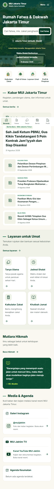
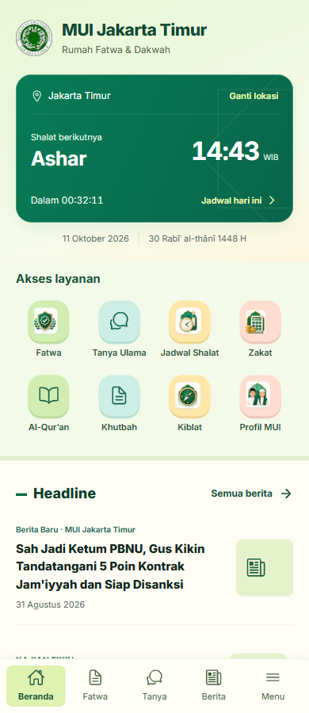
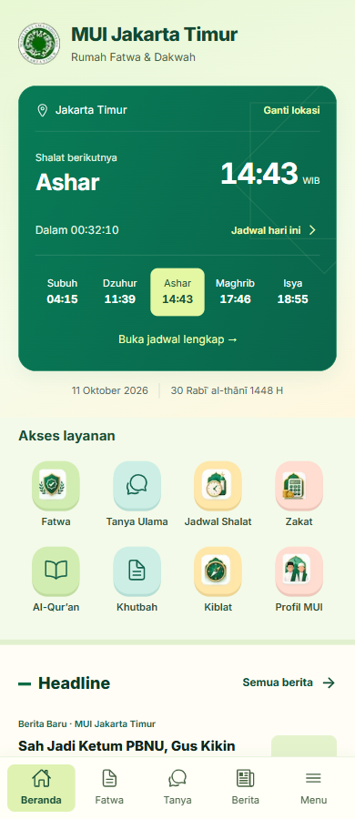
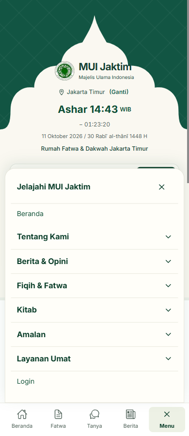
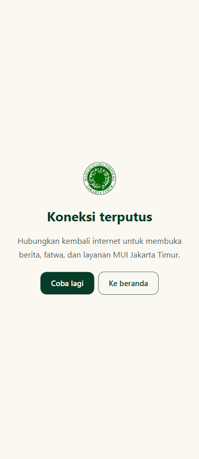
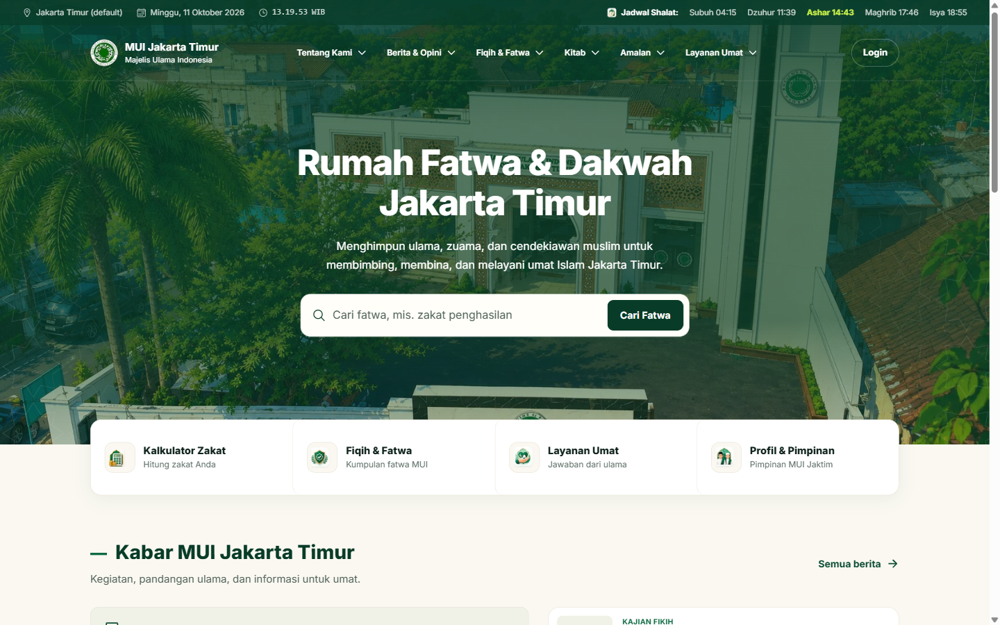

Identitas ringkas, kartu jadwal hijau, akses layanan dan headline ringkas. Pencarian beranda mobile telah dihapus. Screenshot preview lokal; berita menggunakan fixture. Ringkasan dan keterbatasan pengujian.





